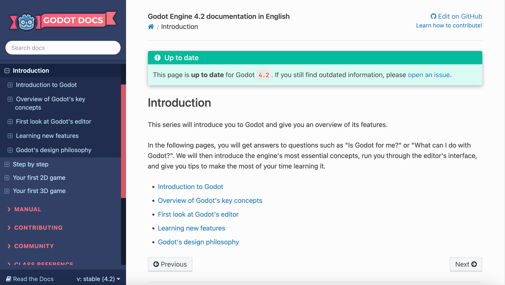
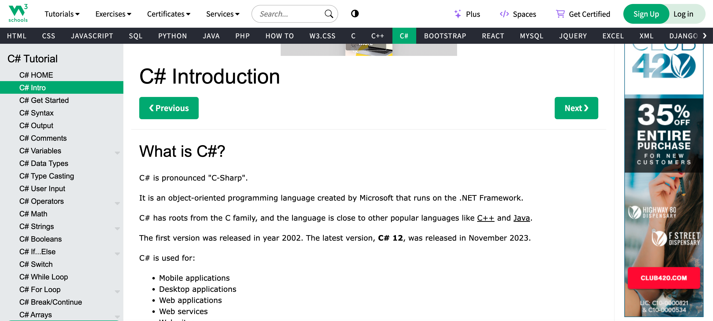

This is a brown divider
This is another brown divider
Since I wanted to document my process of learning the basics of the game engine Godot, there was a number of websites that I could reference. I found that because many of these websites were for the sole purpose of education, their site designs were often very straightforward and practical, lacking the creativity or complexity of other sites with different purposes.
The first screenshot I provided is from Godot Docs, a tutorial site for beginners. They have a very straightforward navigation bar to the right breaking down broad concepts. Their instructions are displayed in a clear sans-serif font, and they provide plenty of pictures to reference. There are also links and icons to access the home page and GitHub, and their choice in colors ensures that any important information really pops out. I found that this was one of the best sites for learning Godot.
When using the Godot engine, there are two languages that can be used when writing the game script: GDScript or C#. Because of this, I included a screenshot of the site W3Schools, which is often one of the first sites to pop up on Google when you search up any coding language. This site is a lot more simple than Godot Docs; the body of the site has two navigation bars, one at the top for choosing a language, and one at the side breaking down the different topics.
I understand why this site is so simplistic in their design choices, but I also feel as though there is room for improvement. For one, a lot of times the barrage of text that a viewer is faced with can be very overwhelming, especially if they are beginners in the subject manner. Plus, the lack of variety within the instructions may not be the most effective in keeping a reader’s attention. My goal for my site is to create an easily digestible design that is more beginner friendly.